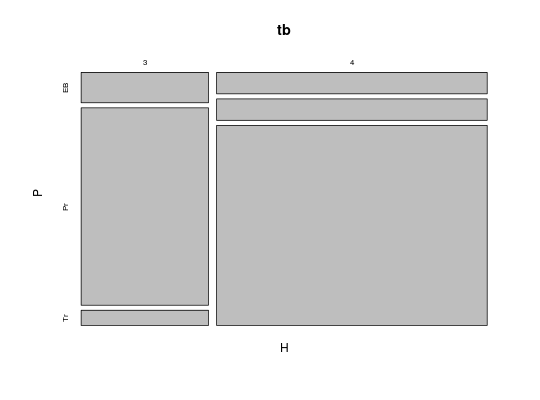
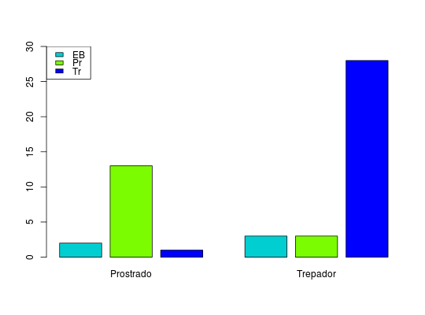

Estudo no qual procurou-se verificar a existência de associação entre hábito de crescimento e os portes da planta na cultura de feijão-de-vagem.
Um data.frame com 50 observações e 2 variáveis, em que
H3: "indeterminado trepador"; e
4: "indeterminado prostrado".PTr: "trepador"; EB: "ereto na base"; e
Pr: "prostrado".Andrade, D. F., Ogliari, P. J. (2010). Estatística para as ciências agrárias e biológicas com noções de experimentação (2nd ed.). Florianópolis, SC. Editora da UFSC. (Tabela 2.6, pág. 74)
data(AndradeTb2.6) str(AndradeTb2.6)#> 'data.frame': 50 obs. of 2 variables: #> $ H: Factor w/ 2 levels "3","4": 2 2 1 2 2 2 1 1 2 2 ... #> $ P: Factor w/ 3 levels "EB","Pr","Tr": 3 1 2 3 3 3 2 1 3 3 ...(tb <- xtabs(~H+P, data= AndradeTb2.6))#> P #> H EB Pr Tr #> 3 2 13 1 #> 4 3 3 28mosaicplot(tb)barplot(t(tb), names.arg = c("Prostrado", "Trepador"), beside = TRUE, space = c(0.2, 1), col = c("darkturquoise", "lawngreen", "blue"), ylim = c(0, 30))legend("topleft", legend = levels(AndradeTb2.6$P), fill = c("darkturquoise", "lawngreen", "blue"))